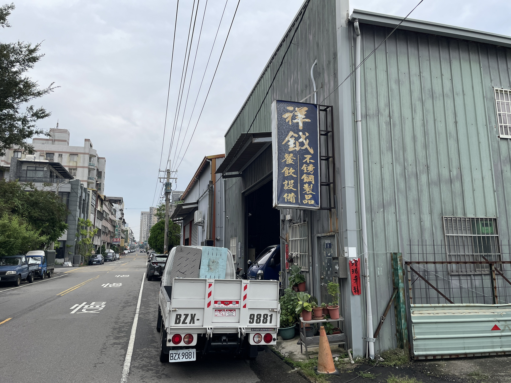

關於祥鉞
我們的故事與堅持
打造高效廚房，成就美味未來。
祥鉞餐飲設備股份有限公司成立於1996年，在台中擁有近30年餐飲設備製造經驗，專注於中西式廚房設備的設計、製造與安裝。
我們不僅是設備製造商，更是全方位的解決方案提供者，致力於為餐飲行業打造高效、優質的廚房環境。 憑藉專業的不鏽鋼加工經驗，祥鉞手工打造每一件產品，確保高品質與客製化需求。我們與多家知名連鎖餐飲品牌及連鎖飲料店合作，幫助無數業者實現夢想中的理想廚房，並提供完善的售後服務，成為業界信賴的合作夥伴。
我們熱忱歡迎對餐飲設備製造充滿熱情、願意接受挑戰的專業人才加入祥鉞團隊，與我們攜手打造卓越的餐飲解決方案，共同開創更美好的未來！
